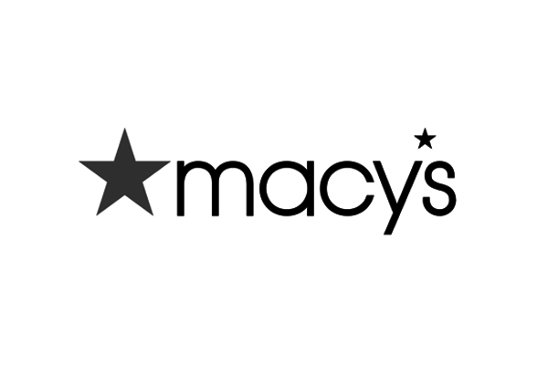
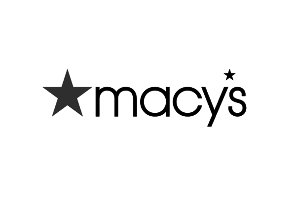

DIGITAL
PROJECT MANAGER
/
CREATIVE PRODUCER
With a healthy obsession for learning new things, getting things done, and always looking for process improvement, I've worked with cross-functional teams in a project management function for a digital creative agency, e-commerce retailer, and an advertising technology start-up. Adaptable, assertive, and armed with a calming presence and skilled in various digital tools ranging from MS Project and Jira to HTML/CSS and Final Cut Pro, I can help solve problems and drive digital product marketing programs to quality completion.

SERVICES
 
